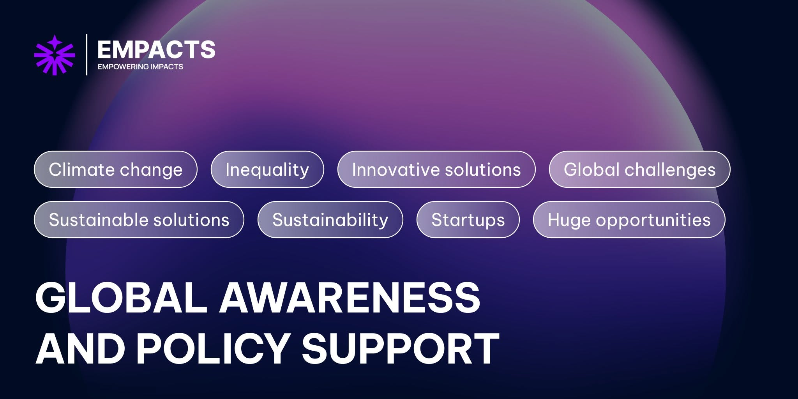
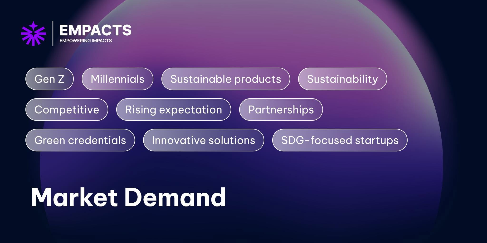
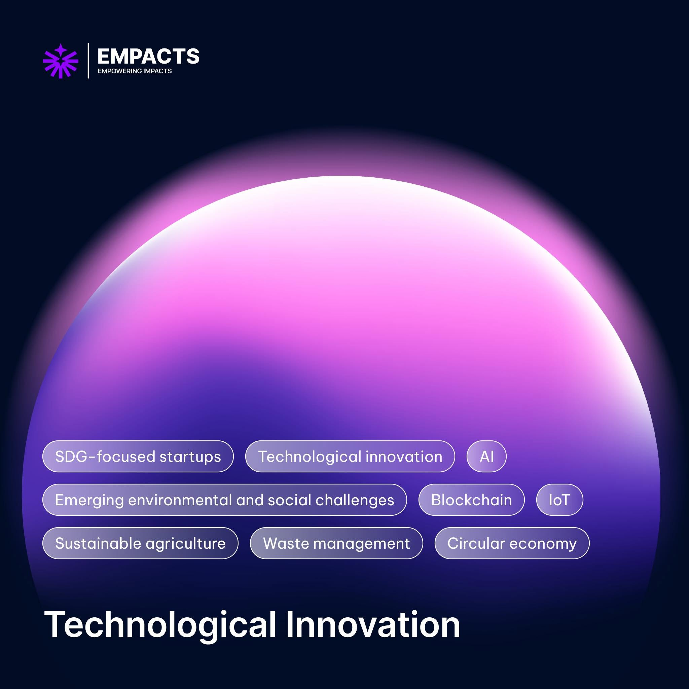
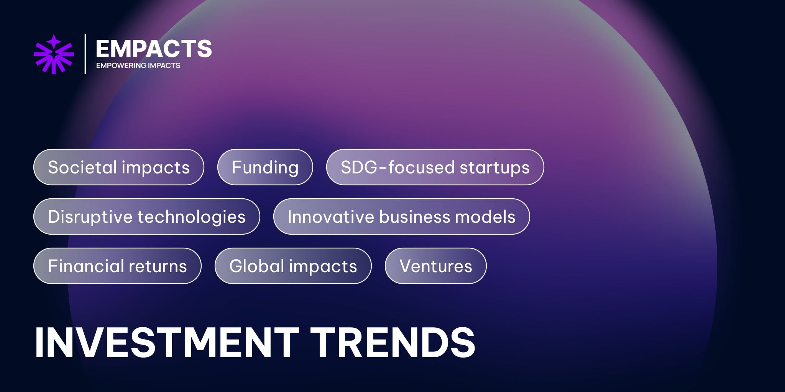
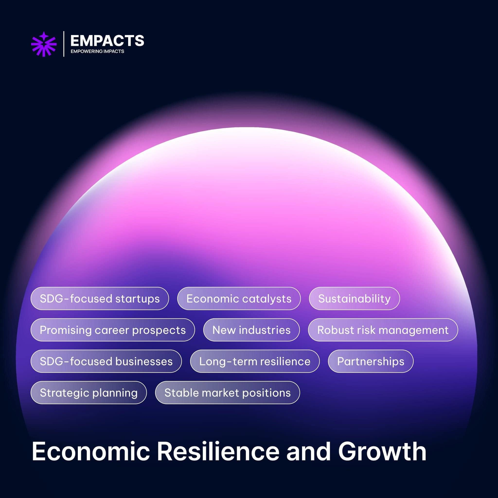
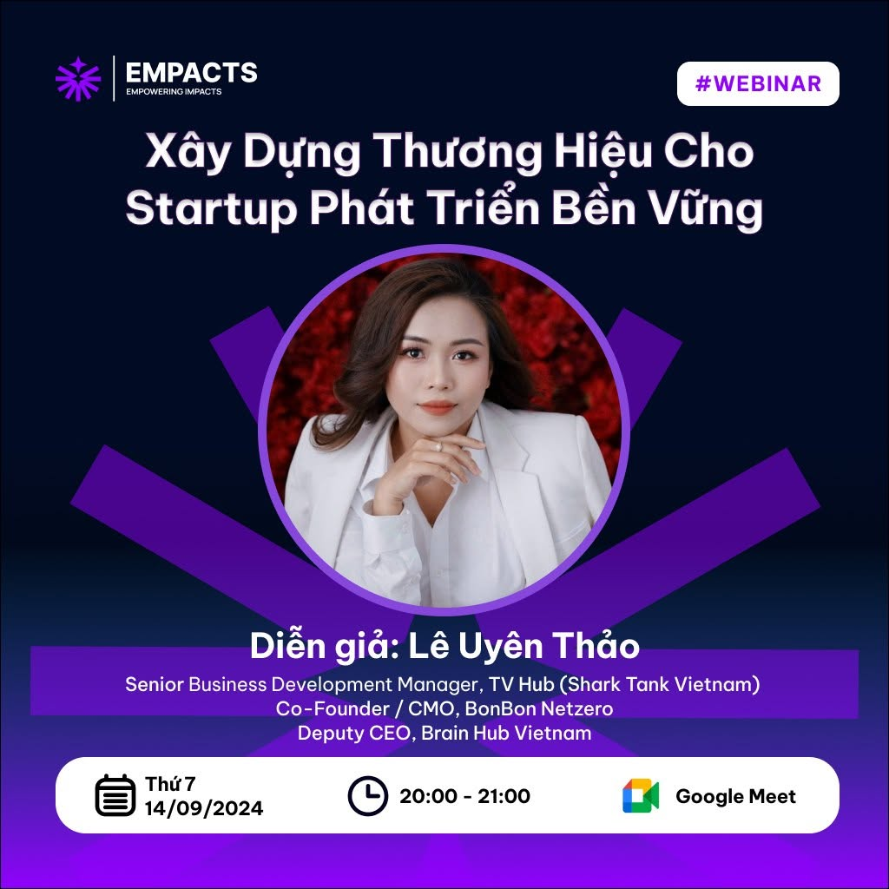
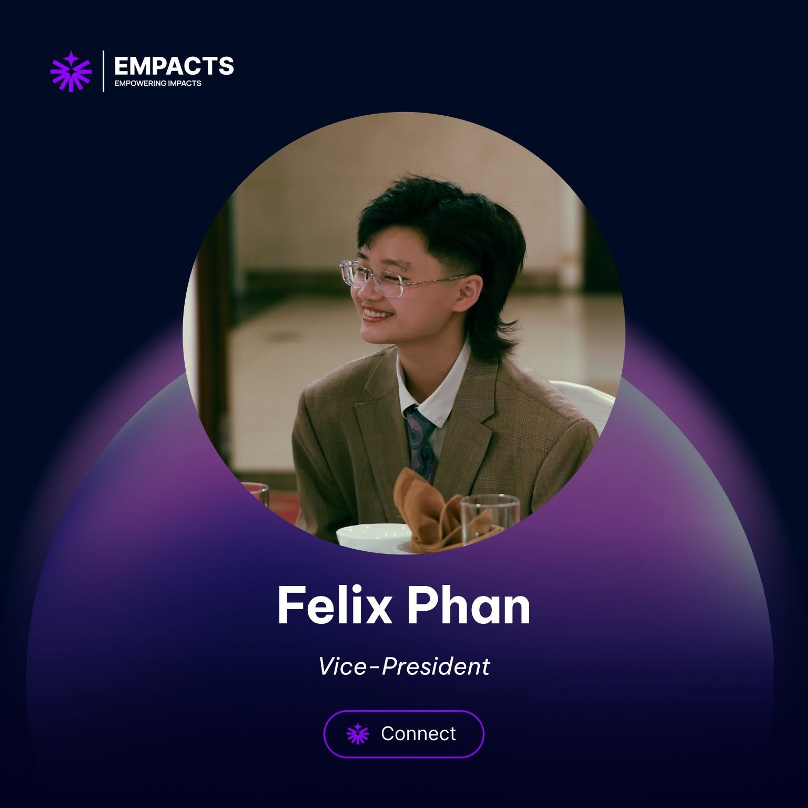

Learn
Knowledge and entrepreneurial capability.
Building an SDG startup ecosystem designed to keep working after its founders left.

I initiated EMPACTS in May 2024 around an ambitious mission: help emerging entrepreneurs develop SDG-aligned ventures through knowledge, expert access, partnerships and more intensive venture support.
By July, we had moved from initiation to public launch. The harder design problem was making sure a fast launch did not create a fragile founder-dependent organisation.
The question was not only how to launch. It was how to stop the organisation becoming dependent on founders remembering everything.
The public programme model was intentionally simple and founder-centred.
Knowledge and entrepreneurial capability.
Experts, feedback, mentors and high-value partnerships.
More intensive support for venture development and market entry.
Programmes describe how founders experience value. Departments describe how EMPACTS produces it.
I designed the organisation around Brand Development, Product Development, Technology Innovation, Partnerships, People & Culture and Operations Excellence. Across the organisation, 21 defined roles and more than 40 repeatable procedures helped turn a 54-person group into an accountable operating system.
Brand strategy, communications and audience growth.
Programme design and founder-facing value.
Digital systems and technology-enabled initiatives.
Mentors, institutions, founders and ecosystem relationships.
Recruitment, development and internal culture.
Processes, governance and cross-functional delivery.
EMPACTS explained its focus through five forces: global awareness and policy support, investment trends, market demand, technological innovation, and economic resilience and growth. The purpose was to make sustainability legible as a business and innovation context rather than decorative CSR language.





I co-led the September 2024 webinar on branding for SDG-focused startups. My work covered programme planning, marketing communications, HR and logistics.


Role clarity, documentation and repeatable procedures were designed to reduce founder dependency before handover became urgent. Internal SOP text, HR files, staff records, performance systems and handover documents remain confidential.
The strongest systems are not the ones that make their founders indispensable. They are the ones that allow other people to carry the work forward.
The public case proves the architecture, not the private organisation.